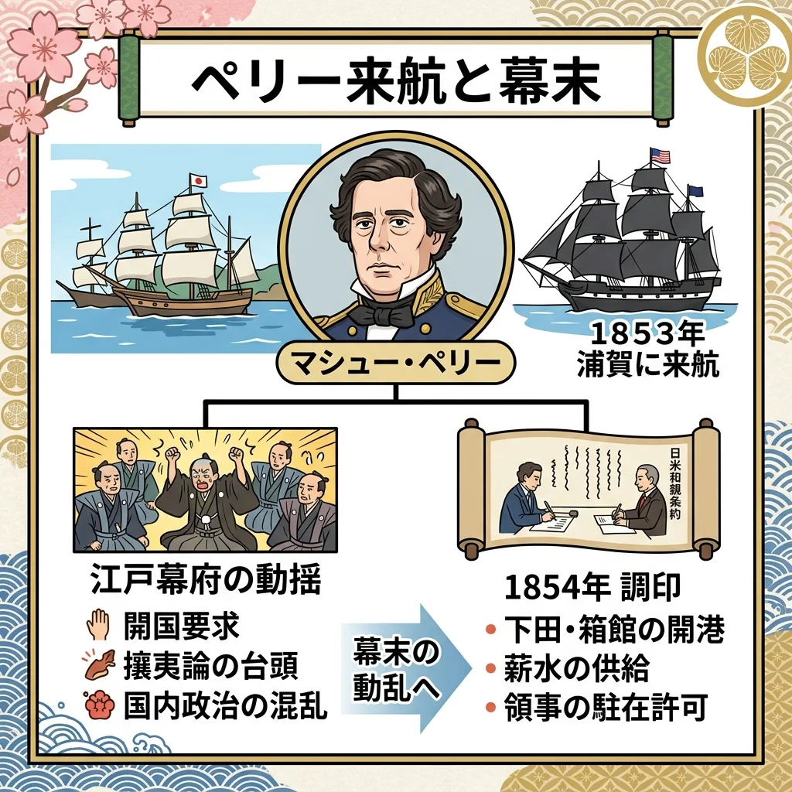
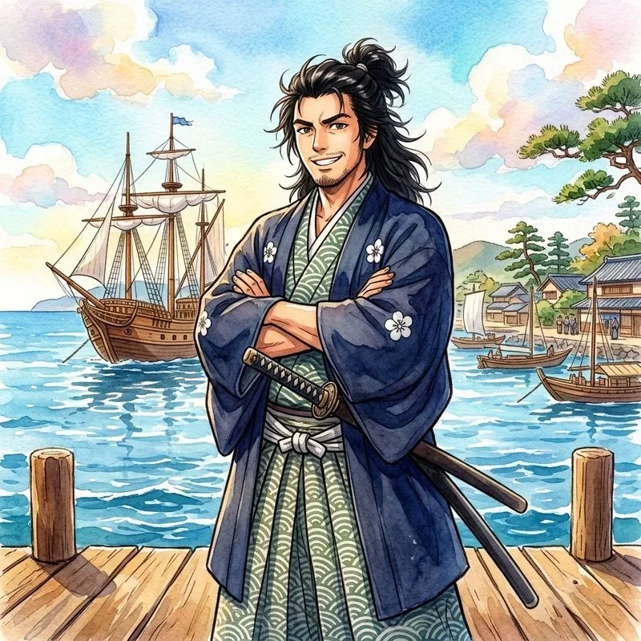
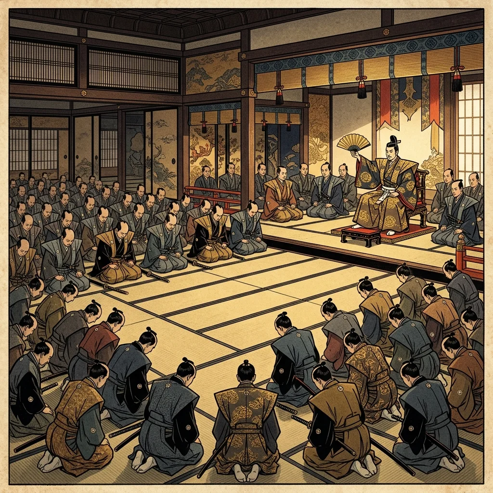

21. 開国と江戸幕府の滅亡
約250年もの間、平和と「鎖国」を守り続けてきた江戸幕府に, 突然の終わりが訪れます。アメリカから現れた巨大な黒船が日本を開国へと揺り動かし、日本を近代国家へと生まれ変わらせる大きなエネルギーとなりました。今回は、激動の「幕末」のドラマと、江戸幕府が滅亡するまでの流れを詳しく解説します！
1. ペリーの来航と「開国」
1853年、アメリカの東インド艦隊司令長官であるペリーが、4隻の黒船（軍艦）を率いて浦賀（神奈川県横須賀市）に突然現れ、幕府に大統領の手紙を渡して開国を強く求めました。大砲を積んだ黒船の威圧感に、幕府は大混乱に陥りました。

図1：浦賀に来航し、強硬に日本に開国を迫ったアメリカの「黒船」のイメージ
① 日米和親条約（1854年）
1854年、再び来航したペリーに対し、武力衝突を恐れた幕府は日米和親条約（にちべいわしんじょうやく）を結びました。これにより、下田（静岡県）と箱館（北海道）の2港を開き、アメリカ船に水や食料を補給することを認めて開国しました。ここに鎖国体制は終了しました。
② 日米修好通商条約（1858年）と不平等な内容
1858年、幕府の大老である井伊直弼（いいなおすけ）は、朝廷の天皇の許し（勅許）を得ないまま、アメリカ総領事ハリスと日米修好通商条約（にちべいしゅうこうつうしょうじょうやく）を結び、本格的な貿易を始めました。この条約は、日本にとって極めて不利な「不平等条約」であり、以下の2点がテストに非常によく出題されます。
不利な点①：日本に「関税自主権（かんぜいじしゅけん）」がない
日本に入ってくる輸入品に対してかける税（関税）の割合を、日本が独自に決める権利を持たず、アメリカとの話し合いで決定しなければなりませんでした。これにより、国内の産業を守ることが難しくなりました。
不利な点②：アメリカに対して「領事裁判権（りょうじさいばんけん）／治外法権」を認める
日本国内で罪を犯したアメリカ人を、日本の裁判所で裁くことができず、アメリカの領事（裁判官）がアメリカの法律で裁くことを認めました。犯人が正当に処罰されないという問題が起きました。
※幕府はオランダ、ロシア、イギリス、フランスとも同様の不平等条約（安政の五カ国条約）を結び、箱館、神奈川（横浜）、兵庫（神戸）、長崎、新潟の5港を開きました。
2. 尊王攘夷運動の激化と「桜田門外の変」
朝廷の許しを得ずに不平等条約を結んだ幕府や井伊直弼に対し、「天皇を敬い（尊王）、外国人を力づくで追い払う（攘夷）」という尊王攘夷運動（そんのうじょういうんどう）が全国の武士たちの間で激しく燃え上がりました。
① 安政の大獄（1858、1859年）と桜田門外の変（1860年）
大老の井伊直弼は、幕府のやり方に反対する福井藩主・松平慶永や、長州藩 of 思想家である吉田松陰（よしだしょういん）ら多くの志士や大名を厳しく処罰・死刑に処しました（安政の大獄）。これに憤慨した水戸藩などの浪士たちが、1860年の雪の日に、江戸城の門外で井伊直弼を暗殺しました。これが桜田門外の変（さくらだもんがいのへん）です。大老のトップが白昼堂々と暗殺されたことで、幕府の権威は地に落ちました。
3. 倒幕へ向けた動きと「薩長同盟」
尊王攘夷運動をリードしていた薩摩藩（鹿児島）と長州藩（山口）でしたが、それぞれイギリスや4カ国連合艦隊との戦争（薩英戦争、下関戦争）を経験し、海外の圧倒的な軍事力に敗北したことで、「力づくで外国人を追い払う（攘夷）のは不可能だ」と悟りました。
彼らは、「まず今の古い幕府を倒し、外国に対抗できる新しい強力な政府をつくらなければならない（倒幕）」と方針を改めました。
① 薩長同盟（さっちょうどうめい）の結び（1866年）
薩摩藩と長州藩は、以前は政治の主導権をめぐって激しく対立していましたが、土佐藩（高知県）出身の浪人である坂本龍馬（さかもとりょうま）や中岡慎太郎の粘り強い仲介により、1866年に秘密裏に軍事同盟を結びました。これが薩長同盟（さっちょうどうめい）です。薩摩の西郷隆盛（さいごうたかもり）と長州の木戸孝允（きどたかよし／桂小五郎）が手を取り合ったことで、倒幕の準備が一気に整いました。

図2：薩摩と長州の間を取り持ち、倒幕の立役者となった「坂本龍馬」のイメージ
4. 大政奉還と戊辰戦争（幕府の滅亡）
倒幕派が武力で幕府を倒そうと動く中、第15代将軍の徳川慶喜（とくがわよしのぶ）は、先手を打って政権（日本を治める権利）を天皇に返すことを決意しました。
① 大政奉還（たいせいほうかん）と王政復古（1867年）
1867年10月、徳川慶喜は政権を朝廷に返還しました。これが大政奉還（たいせいほうかん）です。慶喜はこれにより「天皇のもとでの新しい議会政治」においても、徳川家が最高権力を握り続けられると考えたのです。
... 徳川氏を完全に排除したい薩摩藩の西郷隆盛や公家の岩倉具視らは、同年12月に、天皇を中心とする新しい政府を作ることを宣言した『王政復古の大号令（おうせいふっとのだいごうれい）』を発し、慶喜に対して領地や官職を返すよう厳しく求めました。
② 戊辰戦争（ぼしんせんそう）の開始（1868年〜）
新政府の強硬な態度に怒った旧幕府軍と、薩摩・長州を中心とする新政府軍の間で、1868年に戊辰戦争（ぼしんせんそう）が始まりました。京都の鳥羽・伏見の戦いから始まり、江戸城の無血開城、東北での戦いを経て、1869年の北海道の函館（五稜郭の戦い）で新政府軍が完全勝利するまで続き、ここに約260年間続いた江戸幕府が完全に滅亡しました。

図3：二条城において大名たちを前に政権の返還を宣言する徳川慶喜（大政奉還）のイメージ
🔥 この単元のテスト対策・暗記のコツ
-
★
日米和親条約（1854年）と日米修好通商条約（1858年）の違い：
・和親条約：下田・箱館の2港を開港（貿易はまだ行わない）
・通商条約：ハリスと結び、貿易を開始、神奈川（横浜）など5港を開港 -
★
通商条約の不平等な内容（超頻出・記述対策）：
・「日本に関税自主権がない、相手国に領事裁判権（治外法権）を認めること」とすらすら書けるようにしておきましょう。 -
★
薩長同盟（1866年）の要点：
・薩摩の西郷隆盛と長州の木戸孝允が結んだ軍事同盟。仲介者は坂本龍馬。 -
★
大政奉還（1867年）と王政復古の大号令の対比：
・大政奉還：将軍徳川慶喜が政権を天皇に返すこと。
・王政復古の大号令：倒幕派が徳川氏を排除し、天皇を中心の新しい政府をつくる宣言をしたこと。大政奉還のすぐ後に起きています。